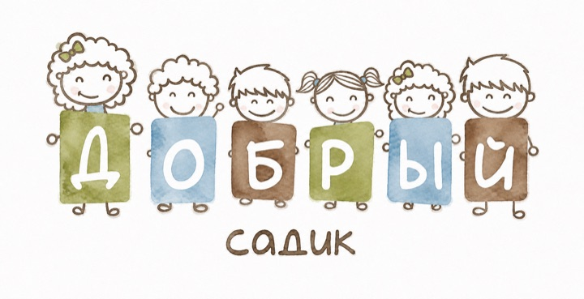
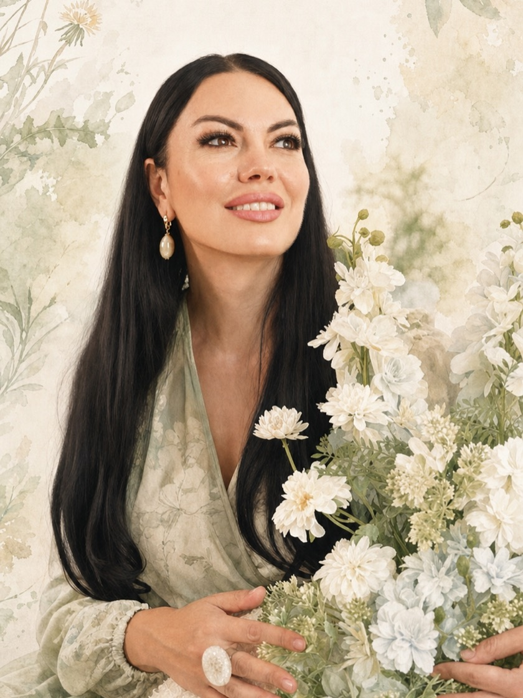

Без очередей
Зачисление в день экскурсии. Работаем 12 месяцев в году.
частный детский сад · Иркутск
Прозрачность 24/7: онлайн наблюдение и подробный отчет.

почему родители ищут частный сад
Согласно статистике Wordstat, ежемесячно более 3000 человек в Иркутске ищут «частный детский сад», «садик полный день» и «группы кратковременного пребывания». Основная причина — нехватка мест в муниципальных учреждениях и желание родителей обеспечить ребенку индивидуальный подход. В «Добром садике» мы решили эту проблему: у нас всегда есть места, а программа адаптируется под темп вашего ребенка.
Зачисление в день экскурсии. Работаем 12 месяцев в году.
Лицензия на образовательную деятельность, огороженная территория, видеонаблюдение.
Собственный повар, меню по СанПиН, ежедневные прогулки на собственной огороженной территории.
Никаких листов ожидания и «позвоните через год».
методика
В «Добром садике» мы используем научный подход и авторскую систему «Русское поле ценностей» российского исследователя Юлии Разумовской (заведующая детским садом), а также адаптированную систему Марии Монтессори.
Это не просто «прогулки в природу» и манипуляция с красками. Это среда, где ребенок учится самостоятельности, концентрации и уважению к традиционным ценностям через эстетику.
В отличие от классических садов, где все делают одно и то же по звонку, у нас ребенок сам выбирает деятельность. Педагог лишь направляет. Так формируется внутренняя мотивация, которая останется с ним в первом классе.
до 15 детей
в группе — педагог видит каждого. 4 педагога в каждой группе: около одного взрослого на четырёх детей.
3 часа в день
свободная работа в эколого-эстетической среде: ребёнок сам выбирает занятие и учится концентрации.
100%
наших выпускников легко проходят собеседования в лучшие школы Иркутска.
| Классический подход | В «Добром садике» |
|---|---|
| Все делают одно и то же по звонку | Ребёнок сам выбирает деятельность, педагог направляет |
| Присмотр за детьми | Подготовка к школе и внутренняя мотивация |
| Принудительная зарядка | Утренний круг и свободный выбор занятия |
| Пластик и синтетические цвета | Дерево, лён и натуральные материалы |
режим дня · прозрачность
–
Дети приходят, здороваются, выбирают занятие в среде. Никакой принудительной зарядки.
–
Готовит наш бренд-шеф. Молочные каши с добавлением 82,5% сливочного масла, свежие фрукты, фермерские продукты.
–
В Николовом Посаде — ежедневные прогулки в лесном массиве на безопасной территории, наблюдение за природой, экологические игры, своя закрытая площадка.
–
Дети учатся пользоваться столовыми приборами и убирать за собой.
–
Индивидуальные кроватки, приглушенный свет.
–
Йога, музыка, подготовка к школе и шахматы.
–
Спокойное завершение дня, чтение книг, ожидание родителей.
пространство
Мы верим, что стены тоже учат. Поэтому мы отказались от пластика в пользу дерева, льна и натуральных материалов.
В Иркутске мало солнца, мы компенсируем это светом в интерьере.
Мощные системы приточной вентиляции и медицинский кварц. В группах всегда свежо, окна открываются только для проветривания по графику.
Все розетки скрыты, углы защищены, мебель закреплена. Ребенок может свободно перемещаться по группе без запретов.
Всё, что мама хочет проверить на экскурсии, — мы покажем сами.
команда

Основатель «Доброго садика» — Юлия Разумовская.
Мы создали этот сад, потому что не нашли в Иркутске места, где к детям относились бы с такой же научной точностью, при этом сохраняя полноценную связь с природой и арт-практиками.
У нас нет «нянечек». У нас есть разумные взрослые. Каждый педагог прошел обучение и сертификацию.
адаптация
Мы не бросаем ребенка в группу. Привыкание идёт в его темпе — а если вы очень торопитесь, детский сад пойдёт вам навстречу.
Знакомство
2–3 часа бесплатно: ребёнок знакомится с педагогами и средой.
Первые 2 недели
Ребёнок привыкает к ритму дня, месту и новым взрослым.
Около 2 месяцев
Появляются доверие к педагогам, друзья и любимые занятия.
Дальше
Сам одевается, выбирает дело по душе и доводит его до конца.
частный детский сад в Николовом Посаде
Николов Посад · Иркутский район
19 000 ₽/ мес
В стоимость всегда включено:
Пробный день — бесплатно. Перерасчёт по справке, если ребёнок заболел.
5 приёмов пищи — уже в цене
Расчёт при 22 рабочих днях в месяце и 11 часах в садике (8:00–19:00).
отзывы
Перевели сына из муниципального сада. Через месяц перестал болеть, начал сам одеваться и складывать игрушки. Педагоги знают его интересы по имени.
Приходите на экскурсию или бесплатный пробный день: посмотрите группы, территорию и познакомьтесь с педагогами, которые будут рядом с вашим ребёнком.
Прийти на пробный деньвсё главное на одной карточке
«Добрый садик» — частный детский сад в Николовом Посаде (Иркутский район), где дети развиваются в малых группах по эколого-эстетической методике с элементами Монтессори.
вопросы родителей
Не нашли ответа? Позвоните нам или оставьте заявку — расскажем всё и покажем лично.
Задать вопросМы не бросаем ребенка в группу. Первые 2 недели занимает физическая адаптация. 2 месяца — психологическая адаптация. Мы не используем методы «поплачет и привыкнет». Но если очень торопитесь — детский сад пойдет вам навстречу.
Мы строго соблюдаем СанПиН по утреннему фильтру — больных детей не принимаем, чтобы остальные были здоровы. Перерасчет по справке предусмотрен.
Да. Вы можете привести ребенка на 2–3 часа абсолютно бесплатно, чтобы он познакомился с педагогами и средой.
Полный день (уход и присмотр) в Николовом Посаде — 19 000 ₽ в месяц. В стоимость всегда включены уход и присмотр, 5-разовое питание и все материалы.
До 15 детей в группе и 4 педагога в каждой группе — педагог видит каждого ребенка. Педагоги с профильным образованием и стажем от 7 лет.
Нет, очередей нет: зачисление проходит в день экскурсии. Детский сад работает 12 месяцев в году.
Детский сад работает с понедельника по пятницу с 8:00 до 19:00, 12 месяцев в году.
Готовит собственный повар — наш бренд-шеф, меню составлено по СанПиН. Питание 5-разовое: молочные каши со сливочным маслом 82,5%, свежие фрукты, фермерские продукты.
Да. Родителям доступно онлайн-наблюдение 24/7 и подробный отчет.
Да, у «Доброго садика» есть лицензия на образовательную деятельность. Территория огорожена, ведется видеонаблюдение.
Эколого-эстетическое воспитание с элементами системы Марии Монтессори и авторская система «Русское поле ценностей» Юлии Разумовской, заведующей садом. Ребенок сам выбирает деятельность, педагог направляет. Каждый день — 3 часа свободной работы в эколого-эстетической среде.
Да. В программе — подготовка к школе, шахматы, музыка и йога, а ежедневная свободная работа формирует самостоятельность и внутреннюю мотивацию. Наши выпускники легко проходят собеседования в лучшие школы Иркутска.
приходите знакомиться
Покажем группы, кухню и территорию, познакомим с педагогами. Зачисление — в день экскурсии.